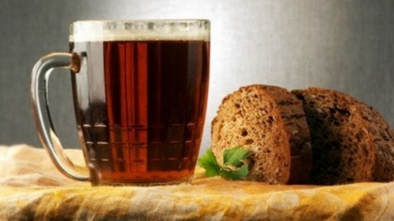

Фруктовые, ягодные и овощные квасы .

В этот раздел вошли квасы, приготовленные из ягод, фруктов или овощей, которые всегда нам доступны.
Квас «Яблочный вкус»
5 кг яблок
10 л воды
100 г изюма
800 г сахара
10 г дрожжей
К мелко нарезанным яблокам нужно добавить изюм и сахар, залить теплой кипяченой водой, добавить дрожжи и поставить емкость в теплое место. Как только начнется хорошее брожение, жидкость нужно процедить, разлить по бутылкам и закупорить.
Через 2–3 дня квас будет готов. Хранить его в прохладном месте.
Классический грушевый квас
2 кг груш
800 г сахара
8 л воды
лимонная кислота – на кончике ножа
10 г дрожжей
горсть изюма
Мелко нарезанные груши нужно засыпать сахаром и немного размять. Залить теплой кипяченой водой, добавить лимонную кислоту и дрожжи и оставить квас для брожения в теплом месте. Когда на поверхности появится пена, примерно через 10–12 часов, квас нужно процедить и разлить по бутылкам, предварительно положив в каждую 2–3 изюминки.
Бутылки закупориваем и храним в холодильнике. Через день-два квас можно пить.
Квас «Перезрелые бананы»
2,5 кг перезрелых бананов
5 л воды
5 г дрожжей
Бананы нужно размять, залить теплой кипяченой водой и оставить на сутки в теплом месте. Затем снять пену и процедить. Дать отстояться час-другой и еще процедить.
Далее разливаем по бутылкам и храним в холодильнике на нижней полке. Через 1–2 дня можно пить.
Апельсиновый квас
500 г апельсинов
900 г сахара
10 л воды
1 лимон
10 г дрожжей
Апельсины нарезать ломтиками, немного истолочь с 500 г сахара, залить кипяченой теплой водой, размешать, добавить сок одного лимона, 400 г сахара и дрожжи. Через 12 часов процедить, разлить, закупорить.
Сутки молодой квас должен стоять при комнатной температуре, затем убираем его в холодильник. Через 1–2 дня апельсиновый квас готов.
«Лимончик»
500 г лимонов
250 г сахара
50 г лугового меда
20 г дрожжей
3 л воды
50 г лимонной цедры
10 г изюма
корица по вкусу
Воду довести до кипения, всыпать в нее сахар, перемешать и остудить. В сахарный сироп добавить сок, выжатый из лимонов, цедру, мед, разведенные небольшим количеством теплой воды дрожжи, корицу и изюм и оставить на 3–4 часа в теплом месте.
Затем жидкость перелить в стеклянную емкость, плотно закрыть крышкой и поместить в холодильник. Через сутки квас можно пить.
Морковный квас с пряностями
1,5 кг моркови
4 л воды
несколько кусочков черного хлеба
2 стакана сахара
щепоть корицы
5 гвоздик
лимонная кислота – на кончике ножа
Натереть на крупной терке вымытую и очищенную сладкую морковь, залить холодной кипяченой водой, довести до кипения и снять с огня. В настой добавить хлеб, сахар и пряности, перемешать, накрыть и оставить в теплом месте на 10–12 часов. Процедить квас и дать постоять в комнате сутки.
• Квас получается еще вкуснее, если в чашку с ним добавить кубики пищевого льда.
Свекольный квас
2 кг свеклы
4 л воды
0,5 кг сахара
лимонная кислота – на кончике ножа
30 г дрожжей
ломоть ржаного хлеба
Свеклу вымыть и измельчить на терке, затем залить теплой кипяченой водой. Добавить сахар, лимонную кислоту и растертые с сахаром дрожжи. Перемешать и опустить в жидкость ломоть ржаного хлеба, слегка подсоленного.
Когда сусло начнет бродить, процедить его, разлить по бутылкам, плотно закупорить и через сутки перенести в прохладное место. Еще через сутки квас готов!
Важно! Свекольный квас нужно пить с огромной осторожностью при камнях в почках и различных болезнях почек и мочевого пузыря, а также при подагре из-за содержания в свекле щавелевой кислоты.
Квас из капусточки
5 л воды
30 г дрожжей
2 кг капусты
250 г сахара
Кочан капусты очистить от верхних листьев и нарезать пластинками шириной 3–4 см. После этого капусту необходимо хорошо промыть в холодной воде и высушить на противнях в духовке при небольшой температуре (не допуская подгорания). Положить капусту в эмалированную или стеклянную посуду, залить водой и прокипятить 15 минут.
Слегка охлажденный отвар процедить, в теплой воде развести дрожжи и вылить в отвар. Сахар растворить в теплой кипяченой воде и тоже добавить в отвар. Разлить отвар по бутылкам, закупорить их и оставить на сутки при комнатной температуре. Через одни сутки квас будет готов.
Общие технологии приготовления ягодных квасов
В принципе, какие бы ягоды мы ни взяли, есть две общие технологии приготовления ягодных квасов – с дрожжами и без.
Приготовление бездрожжевого ягодного кваса
Ягоды нужно очистить, вымыть, дать стечь воде, размять, переложить в эмалированную, деревянную или стеклянную посуду и залить теплым сахарным сиропом (100–150 г сахара на 1 л воды) из примерного расчета 4 л сиропа на 1 кг ягод.
Все размешать, накрыть марлей, выдержать в течение суток при комнатной температуре, процедить и разлить в бутылки, в которые сначала нужно положить по несколько изюминок. Бутылки нужно наполнять по «плечики». Плотно их закупорить пробками и поместить в холодное место на 1–2 недели.
Приготовление дрожжевого ягодного кваса
Ягоды очистить, вымыть, размять и залить кипятком из расчета примерно 7–10 л воды на 1 кг ягод, накрыть крышкой. Через 10–12 часов процедить, на каждые 10 л жидкости добавить 700–800 г сахара, 20–30 г дрожжей и немного лимонной кислоты.
Размешать, накрыть посуду тканевой салфеткой и оставить в теплом месте еще на 12 часов. Затем – разлить в бутылки по «плечики», закупорить и поставить в прохладное место на три дня. Квас нужно хранить в холодильнике, обычно не более трех дней.
Смородиновый квас
Этот квас можно делать из любого вида смородины.
1 кг смородины
10 л воды
1 кг сахара
3 гвоздички
1/2 ч. л. корицы
10 г дрожжей
Ягоды смородины нужно вымыть, размять, залить теплой кипяченой водой, добавить сахар, пряности, дрожжи.
Квас оставить при комнатной температуре на 12 часов, затем разлить по бутылкам. Хранить в холодильнике.
• В квас из белой или красной смородины можно добавить 100 г лепестков роз или 100 г сухого шиповника для аромата.
Рябиновый квас
1 кг ягод рябины
500 г сахара
4 л воды
15 г дрожжей
Рябину нужно положить в дуршлаг и подержать 3–5 минуты в кипящей воде, затем размять ягоды, залить их теплой кипяченой водой и варить 10 минут. После этого отвар процедить и добавить сахар. Когда отвар станет теплым, добавить в него дрожжи.
Спустя несколько часов нужно разлить квас по бутылкам, закупорить и поставить в прохладное место на 2–3 суток. Затем поместить в холодильник.
Квас «Клубничная радость»
1 кг клубники
7 л воды
2 ст. л. меда
2 ст. л. сахара
лимонная кислота – на кончике ножа
10 г дрожжей
горсть изюма
Клубнику уложить в стеклянную или эмалированную посуду и залить водой, нагреть до кипения и снять с огня. Через 10–15 минут процедить, добавить мед, сахар, лимонную кислоту, все размешать и еще раз процедить.
Затем добавить дрожжи, спустя 2 часа перемешать и разлить в темные бутылки, оставляя до верха горлышка 8–10 см. В каждую бутылку положить 2–3 изюминки, затем закупорить бутылки прочными пробками и поместить в холодное место. Через 3–4 дня квас будет готов к употреблению.
Вишневый квас
4 кг вишен
10 л воды
300 г сахара
горсть изюма
20 г дрожжей
Очищенные от косточек ягоды вишни нужно залить водой и кипятить до тех пор, пока вода не станет темно-красной. Горячий отвар процедить, добавить сахар и изюм, охладить до комнатной температуры, добавить дрожжи, накрыть посуду крышкой и оставить квас бродить.
Когда квас забродит, его переливают в бутылки, закупоривают и ставят на 2–3 дня в прохладное место, после чего он готов к употреблению.
Квасная клюковка
1 кг клюквы
1 кг сахара
10 л воды
30 г дрожжей
горсть изюма
Клюкву нужно промыть и размять, добавить сахар, дрожжи и залить теплой кипяченой водой.
Оставить настой на 10–12 часов в теплом месте, а затем молодой квас разлить по бутылкам, добавив в каждую 2–3 изюминки. Бутылки закупориваем и оставляем на 8–10 часов в теплом месте. Хранить квас в холодильнике не более 5 дней.
Малиновый квас с кислинкой
2 кг ягод малины
8 л воды
1 кг сахара
200 мл лимонного сока
10–20 г дрожжей
горсть изюма
Ягоды малины размять, залить кипящей водой, добавить сахар, все хорошенько размешать и оставить на 12 часов в теплом месте, накрыв крышкой.
Затем настой процедить, добавить дрожжи, разведенные небольшим количеством теплой воды, свежеотжатый лимонный сок, изюм и оставить на 12–16 часов при комнатной температуре. Когда на поверхности сусла сформируется пена, готовый квас процедить еще раз, разлить по бутылкам, хорошенько закупорить и поместить в прохладное место. Через сутки квас готов к употреблению. Вызревший напиток нужно хранить в холодильнике.
Квас на соке
Такой квас можно приготовить из любого ягодного или фруктового концентрированного сока, но лучше брать кислые соки.
10 л горячей кипяченой воды
1 л сока
500–700 г сахара
25 г дрожжей
В воду влить сок, добавить сахар и подождать, пока настой остынет до комнатной температуры, после – добавить дрожжи. Все размешать и поместить в теплое место на сутки.
Затем разлить квас по бутылкам, закупорить их и поставить в холодильник.
• Если сок сладкий, сахара нужно взять меньше (по вашему вкусу).
Любимый виноградный квас
Этот квас полюбят все, у кого на даче растет виноград. После зеленой обломки винограда остается много зеленых листьев и побегов. Из них можно сделать виноградный квас, богатый витамином С, антиоксидантами, пектинами и органическими кислотами.
ведро виноградных листьев и зеленых побегов
около 7 л кипятка
400 г сахара
горсть изюма
Хорошо промытые побеги с листьями плотно уложить в эмалированное ведро и залить кипятком до насыщения. Укутать ведро с крышкой ватником (или чем-то подобным) и оставить на 2–3 дня для настаивания.
Затем отжать сырье, процедить настой и вылить его в стеклянную или эмалированную емкость. Добавить сахар и изюм, все размешать. Разлить квас в бутылки, закупорить их и дать отстояться 7–8 дней. Затем бутылки пастеризовать пару часов при температуре 45–50 °C и поставить в холодильник на нижнюю полку. Удивительный виноградный квас готов!